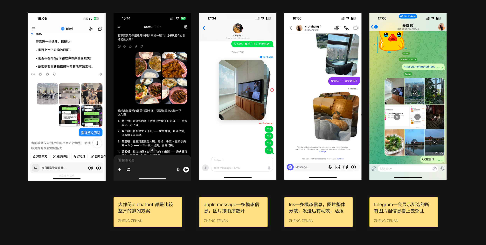
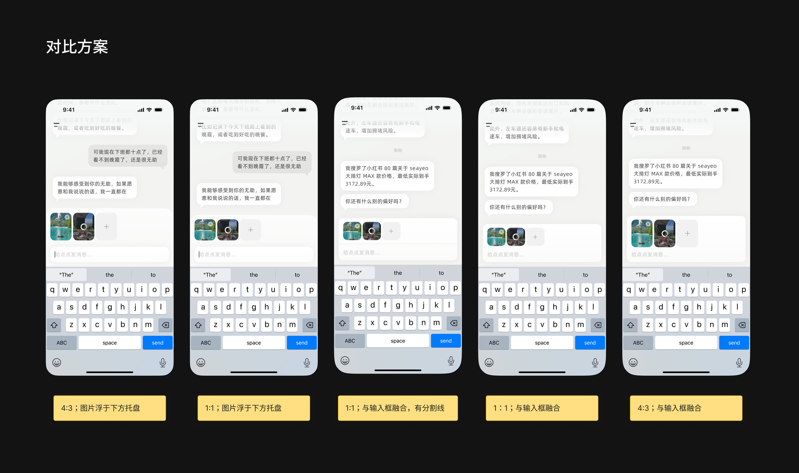
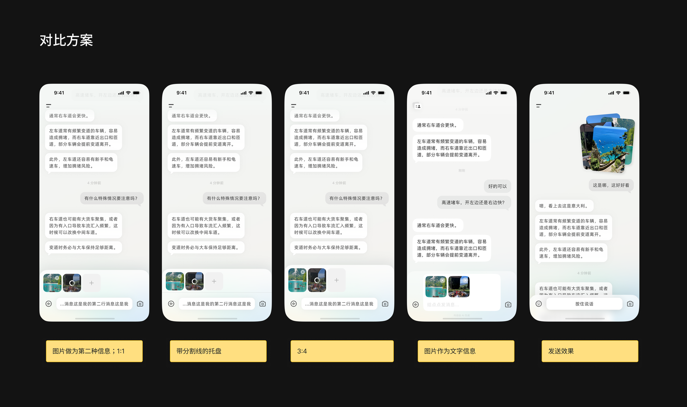
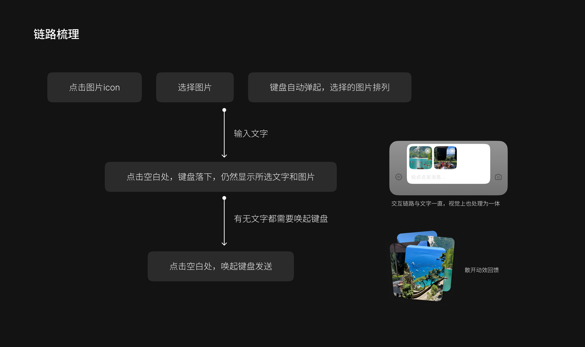
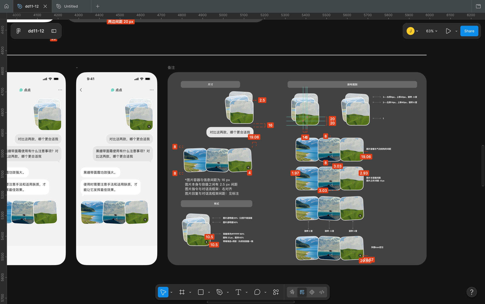
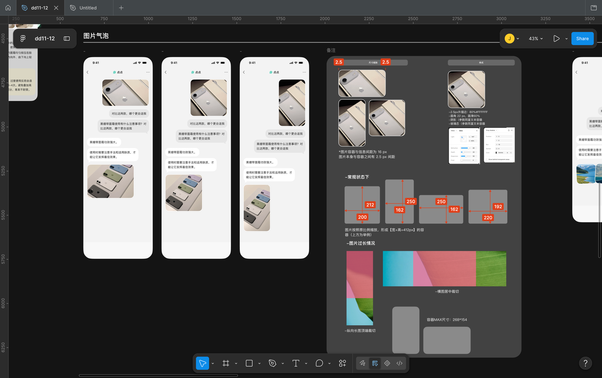

0%
文本 Prompt 加入图像信息后，模型任务理解正确率平均提升
OpenAI · GPT-4V 发布报告
小红书实习项目
在多模态输入与富文本输出之间，重新设计点点如何理解、回应真实的生活提问。
01 · 项目与背景
点点是一款基于小红书 UGC 生态的 AI 聊天应用。依托平台上亿真实用户的生活经验与内容数据，点点能够在各类生活场景中，为用户提供高效、精准、可信赖的答案。
我在小红书创新体验设计组实习，独立参与点点的界面视觉优化及适配、多模态输入能力设计、多模态输出形式探索，均已跟进至正式上线。
02 · 用户困境
单一文本输入难以充分承载用户的表达意图和场景信息。有些问题依赖图片或截图才能准确传达，用户也更倾向用更直接的方式降低描述成本——这对答案的准确度也有实际影响。
0%
文本 Prompt 加入图像信息后，模型任务理解正确率平均提升
OpenAI · GPT-4V 发布报告
0%
多模态交互场景中，用户完成任务的平均步骤数减少约
Google · Gemini 公开案例
03 · 设计方案
与 PM 沟通后，优先锁定两个重点环节：选择图片、图片发送。
重点一 · 参照对象
大部分 AI Chatbot（Kimi、ChatGPT 一类）传图的排列方式偏整齐、偏工具感；反而是 Apple Message、Instagram、Telegram 这类社交 App——图片按顺序散开、发送后带动效、看起来更活泼。点点想要的是接近社交 App 的沟通体感，所以传图和发送这两个环节，参照对象定在了社交 App，而不是其他 AI Chatbot。

基于这个方向，拆解出四个需要先回答的具体问题：
重点二 · 方案对比
用于更直观地比较不同应对措施的结果——图片和文字是融合还是拆分、发送按钮是否需要保留。
收起后的版本，验证信息密度降低后是否仍然清楚可读。


最终方案
与 PM 二次沟通后，我们确立了最终整体链路——将图片定义为「特殊的文字信息」，并确定了初版方案。

对于图片的开发规则交付文档


04 · 最终成果
05 · 其他参与
除了多模态输入这条主线，我也参与了富文本输出的结构设计，以及点点深色模式的适配。
长按面板 · 富文本
Next →